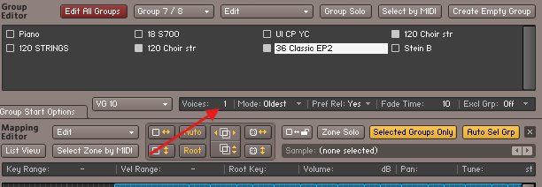
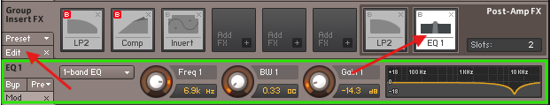

Dicas Importantes
1ª Dica: Segure a tecla "Ctrl" e vá clicando em todos os controles. Isso faz com que eles voltem para a posição inicial. 2ª Dica: Verifique se os controles "Ata" (Ataque) e "Rel" (Release) estão atuando. Caso não estejam, clique na  no "Group Editor". Dê um clique no instrumento que você acabou de importar para selecioná-lo. Em seguida, desça até "Amplifier". Se o Envelope (ADSR) e o Velocity não aparecerem, clique em "Mod". É esperado que apareça uma tela como a figura abaixo, com apenas um Envelope (ADSR) e um Velocity.
no "Group Editor". Dê um clique no instrumento que você acabou de importar para selecioná-lo. Em seguida, desça até "Amplifier". Se o Envelope (ADSR) e o Velocity não aparecerem, clique em "Mod". É esperado que apareça uma tela como a figura abaixo, com apenas um Envelope (ADSR) e um Velocity.

Caso apareçam mais elementos do que o esperado, como na figura abaixo, será necessário realizar o que chamo de "Zerar o sample", que mostrarei como fazer mais adiante.

Também pode acontecer de o som ficar "preso", tocando apenas uma nota de cada vez. Para resolver isso, é simples: substitua o valor "1" por "128" em "Voices", conforme ilustrado na figura abaixo. No entanto, essa correção deve ser feita no "Toca Sample" e o instrumento deve ser salvo.
Uma última dica, que deixei para o final para não causar confusão: em "Group Insert FX", clique em "Edit" e em um filtro ou efeito, conforme indicam as setas vermelhas na figura abaixo. (Às vezes, isso trava e é necessário repetir o processo de forma inversa — primeiro o filtro, depois o "Edit"). Fazendo isso, você abrirá o controle do filtro selecionado. Lembre-se de que tudo o que você fizer em "Group Insert FX" será aplicado apenas ao sample que está selecionado, sendo independente do painel do "Toca Sample". Por exemplo, se o sample selecionado tiver muitos agudos, você pode reduzir esses agudos usando o "EQ", como exemplificado abaixo. Esse ajuste será aplicado apenas a este sample, e depois você pode fazer um ajuste fino no painel do "Toca Sample". No entanto, não exagere nesses ajustes, pois eles aumentam o consumo de recursos do seu equipamento.
Se o sample estiver com muitas oitavas a baixo pode ser que vc tenha que ajustar as oitavas o Tune conforme imagem a ser colocada aqui em baixo
Aqui está um resumo sobre as três principais opções de salvamento no Kontakt:
Patch Only: Salva apenas as configurações do instrumento (parâmetros, efeitos, scripts), sem incluir os samples. Ideal quando os samples já estão no disco e você não precisa movê-los.
Patch + Samples: Salva as configurações do instrumento junto com os samples. É útil para transferir o instrumento completo, incluindo seus arquivos de áudio.
Monolith: Combina o patch e os samples em um único arquivo, facilitando o compartilhamento ou armazenamento, já que tudo fica integrado em um só lugar.